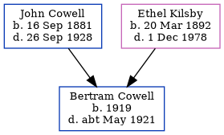

Bertram S Cowell 1919 - c1921
[ Home ] | [ Calendar ] | [ Surnames Index ] | [ Errors ] | [ Family History ]The child of John Cowell (a general carman) and Ethel Kilsby, Bertram Cowell, the fourth cousin once-removed on the mother's side of Nigel Horne, was born in Weedon Bec, Northamptonshire, England in 19191.
He died c. May 1921 in Daventry, Northamptonshire, England2.
Parents
- John Francis was born on 16 Sept 1881
- Ethel Blanche was born on 20 Mar 1892
Citations
- England & Wales, Birth Index: 1916-2005 Online publication - Provo, UT, USA: The Generations Network, Inc., 2008.Original data - General Register Office. England and Wales Civil Registration Indexes. London, England: General Register Office. © Crown copyright. Published by permission of the Cont
- England & Wales deaths 1837-2007 - Findmypast
Media
England & Wales deaths 1837-2007 - BMD/D/1921/2/AZ/000172/097
Family Tree
Map
Generated by ged2site. Last updated on Jul 3, 2024